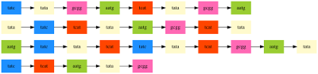
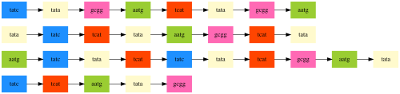

|  |
Maximum Acyclic Subgraph - Multiple Sequence Alignment
MaximumAcyclicSubgraph
|
|  |
Maximum Acyclic Subgraph - Multiple Sequence Alignment
MaximumAcyclicSubgraph
|
This Class stores an unordered_map from strings to colors and a method to map strings (expecially kmers) to a unique color. More...
#include <colormap.h>
Public Member Functions | |
| colormap (std::vector< std::string > &givenKmers, std::vector< sf::Color > &givenColorlist) | |
| colormap () | |
| standard Constructor More... | |
| void | updateAssignment (std::vector< std::string > &givenKmers, std::vector< sf::Color > &givenColorlist) |
| sf::Color | Map (std::string Kmer) |
| std::unordered_map< std::string, sf::Color > | giveAssignment () |
This Class stores an unordered_map from strings to colors and a method to map strings (expecially kmers) to a unique color.
The Class stores 1 variable: colorAssignment, which is a unordered_map with kmers (strings) as keys and a color as the assigned value. You can initialize a "colormap" with a vector of colors and a vector of kmers (strings). But both lists have to has the same size so, that the map method is unique and functionally complete. The Class stores 1 function: Map, which maps a single kmer (string) to a unique color
| colormap::colormap | ( | std::vector< std::string > & | givenKmers, |
| std::vector< sf::Color > & | givenColorlist | ||
| ) |
the complete constructor, which initialize the unordered_map with strings as keys and Color values as values
| givenKmers | a vector of different kmers (strings) |
| givenColorlist | a vector of different Color values |
| colormap::colormap | ( | ) |
standard Constructor
the standard constructor, which initialize the unordered_map empty
| unordered_map< string, Color > colormap::giveAssignment | ( | ) |
Method to return the private unordered_map colorAssignment, which have strings as keys and Color values as values
| Color colormap::Map | ( | std::string | Kmer | ) |
this method will map a single Kmer (string) to a unique Color value with the class functions of the unorderd map.
| kmer | a string which is a Kmer |
| void colormap::updateAssignment | ( | std::vector< std::string > & | givenKmers, |
| std::vector< sf::Color > & | givenColorlist | ||
| ) |
this method initialize the unordered map colorAssignment.
| givenKmers | a vector of different kmers (strings) |
| givenColorlist | a vector of different Color values |
 1.8.11
1.8.11